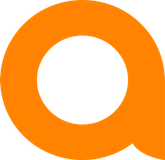
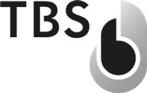
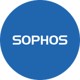

Die passende Marke für Ihr IT-Projekt.
Produktbereiche, Planungsfragen und Beschaffung für Unternehmen in Deutschland und Europa. Wählen Sie einen Hersteller und beschreiben Sie Ihren Bedarf.
Dell Technologies
Business-Notebooks und Desktops · Professionelle Workstations und Displays · PowerEdge Server und Storage
Produkte & Projektanfrage ↗Business notebooks and desktop PCsHP
Business-Notebooks und Desktop-PCs · Z Workstations und Monitore · Drucker und Druckzubehör
Produkte & Projektanfrage ↗ThinkPad notebooks and ThinkCentre desktopsLenovo
ThinkPad Notebooks und ThinkCentre Desktops · ThinkStation Workstations · ThinkSystem Server
Produkte & Projektanfrage ↗Campus and data-center switchingCisco
Campus- und Rechenzentrums-Switching · Routing und Wireless LAN · Netzwerkmanagement und Security
Produkte & Projektanfrage ↗
HPE Aruba Networking
Campus- und Branch-Switches · WLAN Access Points · Central Management und ClearPass
Produkte & Projektanfrage ↗FortiGate firewalls and Secure SD-WANFortinet
FortiGate Firewalls und Secure SD-WAN · FortiSwitch und FortiAP · FortiClient, Management und Security-Abonnements
Produkte & Projektanfrage ↗Microsoft 365 and collaborationMicrosoft
Microsoft 365 und Zusammenarbeit · Azure Cloud-Dienste · Windows und Server-Lizenzierung
Produkte & Projektanfrage ↗Professional headsetsJabra
Professionelle Headsets · Freisprechlösungen · PanaCast Videokonferenzlösungen
Produkte & Projektanfrage ↗Business keyboards and miceLogitech
Business-Tastaturen und Mäuse · Webcams und Headsets · Videokonferenzsysteme und Raumzubehör
Produkte & Projektanfrage ↗IP phones and SIP endpointsGrandstream
IP-Telefone und SIP-Endgeräte · UCM IP-Telefonanlagen und Gateways · GWN WLAN- und Netzwerkprodukte
Produkte & Projektanfrage ↗Enterprise switching and wireless LANHuawei
Enterprise Switching und WLAN · Enterprise Routing · Storage-Infrastruktur
Produkte & Projektanfrage ↗
TBS Biometrics
Biometrische Terminals · Zutritts- und Zeiterfassungsanwendungen · BioManager und Integrationsanforderungen
Produkte & Projektanfrage ↗ProLiant compute and serversHPE
ProLiant Compute und Server · Enterprise Storage · Hybride Infrastruktur
Produkte & Projektanfrage ↗Backup and recoveryVeeam
Backup und Wiederherstellung · Virtuelle, physische und Cloud-Workloads · Microsoft-365-Datensicherung
Produkte & Projektanfrage ↗
Sophos
Endpoint Security · Sophos Firewall · Central Management und MDR-Optionen
Produkte & Projektanfrage ↗Uninterruptible power suppliesAPC
Unterbrechungsfreie Stromversorgung · Rack-Stromverteilung · Rack- und Infrastrukturzubehör
Produkte & Projektanfrage ↗Application delivery and load balancingF5
Application Delivery und Load Balancing · Web Application und API Protection · BIG-IP und NGINX-Technologien
Produkte & Projektanfrage ↗Hardware security modulesUtimaco
Hardware Security Modules · Schlüsselmanagement · Kryptografische Infrastruktur
Produkte & Projektanfrage ↗Markennennungen dienen der Produktbeschreibung. Euro Nexusion behauptet keine offizielle, zertifizierte oder exklusive Herstellerpartnerschaft. Verfügbarkeit, Beschaffungszugang, Preise, Lieferländer und Leistungsumfang werden je Anfrage geprüft.
Distribution & Beschaffungskanäle
Distributoren sind keine Hersteller. Ein möglicher Beschaffungskanal ist von Produktportfolio und individuellem Kontozugang zu unterscheiden.